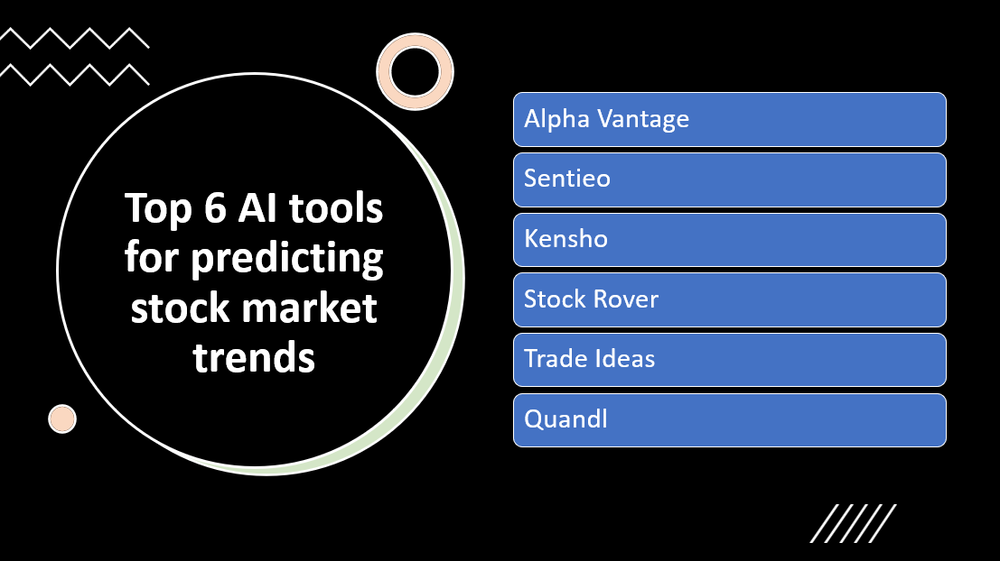

Introduction
Predicting stock market trends is a challenging task that requires analyzing vast amounts of financial data and identifying patterns and signals that can influence market movements.
Artificial Intelligence (AI) tools have revolutionized stock market prediction by leveraging advanced algorithms and machine learning techniques.
In this blog post, we will explore the top six AI tools for predicting stock market trends, empowering investors and traders to make more informed decisions.
- AI tools can analyze vast amounts of historical and real-time market data to identify patterns, trends, and correlations that may impact stock prices.
- AI tools leverage complex machine learning algorithms, such as deep learning and neural networks, to uncover hidden insights and make more accurate predictions.
- AI tools can process and analyze large datasets quickly, enabling faster decision-making in a dynamic stock market environment.
- AI tools can assess and quantify market risks, providing insights into potential market fluctuations and helping investors make more informed decisions.
Here Are Our Top 7 AI tools for predicting stock market trends:
1: Alpha Vantage
Overview and Importance
Alpha Vantage is a leading AI tool for predicting stock market trends. It provides real-time and historical financial market data, including stock prices, technical indicators, and fundamental data. With its robust API and machine learning capabilities, Alpha Vantage empowers investors, traders, and financial professionals to make data-driven decisions and gain insights into market trends.
Learn more about Alpha Vantage
Key Features and Capabilities
Comprehensive Market Data
- Alpha Vantage offers a diverse range of market data, empowering users to build predictive models and conduct thorough market analysis.
Machine Learning Integration
- Alpha Vantage's machine learning capabilities enable users to develop predictive models for stock market trends, leveraging regression, time series forecasting, and pattern recognition techniques to analyze data and make informed investment decisions.
Real-Time and Batch Data Processing
- Alpha Vantage enables real-time and batch data processing, allowing users to access up-to-date market data and perform real-time analysis. This capability is essential for monitoring market trends and making timely investment decisions.
2: Sentieo
Overview and Importance
Sentieo is an advanced AI tool designed to aid in predicting stock market trends. It combines cutting-edge natural language processing (NLP) and machine learning techniques to analyze vast amounts of financial data, documents, and market information. Sentieo is widely used by investment professionals, analysts, and researchers to gain valuable insights, make informed investment decisions, and stay ahead in the competitive financial market.
Learn more about Sentieo
Key Features and Capabilities
Document Search and Analysis
- Advanced document search and analysis capabilities for financial documents.
NLP and Sentiment Analysis
- Natural language processing (NLP) and sentiment analysis for market sentiment tracking.
Data Visualization and Analytics
- Data visualization and analytics tools for in-depth quantitative analysis.
3: Kensho
Overview and Importance
Kensho is a powerful AI tool specifically developed for predicting stock market trends. It leverages advanced machine learning and natural language processing (NLP) techniques to analyze vast amounts of financial data, news, and market events. Kensho is widely recognized for its ability to provide accurate and timely insights, helping investors, analysts, and financial institutions make informed decisions and stay ahead in the dynamic stock market.
Learn more about Kensho
Key Features and Capabilities
Data Integration and Analysis
- Kensho's integration and analysis of diverse financial data sources provides valuable insights into stock market movements, aiding in informed decision-making.
Event-Driven Insights
- Kensho's event-driven insights and real-time analysis help anticipate market reactions and identify investment opportunities based on specific events.
Natural Language Processing (NLP)
- Kensho's advanced NLP capabilities analyze textual sources to assess market sentiment and its impact on stock movements.
4: Stock Rover
Overview and Importance
Stock Rover is a comprehensive AI tool designed for predicting stock market trends. It provides advanced analytics, screening, and research capabilities to help investors and traders make informed decisions. Stock Rover is highly regarded for its ability to analyze large datasets, identify investment opportunities, and optimize portfolio strategies.
Learn more about Stock Rover
Key Features and Capabilities
Advanced Stock Screening
- Stock Rover provides robust screening tools for analyzing stocks based on financial ratios, valuation metrics, and industry performance to identify investment opportunities.
Fundamental and Technical Analysis
- Stock Rover offers a comprehensive analysis combining fundamental and technical factors to provide users with a holistic view of stocks and market trends, facilitating informed investment decisions.
Portfolio Management
- Stock Rover's portfolio management features empower users to track, analyze, and optimize their investment portfolios, enabling informed decision-making and maximizing portfolio performance.
5: Trade Ideas
Overview and Importance
Trade Ideas is an advanced AI tool designed to assist traders in predicting stock market trends. It combines artificial intelligence, machine learning, and big data analytics to provide real-time market insights and generate trading ideas. Trade Ideas is highly valued by active traders and investors for its ability to identify potential trading opportunities and optimize trading strategies.
Learn more about Trade Ideas
Key Features and Capabilities
Real-Time Scanning
- Trade Ideas utilizes real-time scanning, advanced algorithms, and machine learning to identify trading patterns and generate actionable signals for thousands of stocks.
AI-Powered Trade Alerts
- Trade Ideas leverages AI algorithms to generate trade alerts, providing traders with timely notifications about potential entry and exit points based on market conditions and user-defined parameters.
Backtesting and Strategy Testing
- Trade Ideas allows users to backtest and simulate trading strategies using historical data. This feature enables traders to evaluate the performance of their strategies and make data-driven adjustments to improve profitability.
6: Quandl
Overview and Importance
Quandl is a comprehensive financial data platform that plays a vital role in the field of AI tools for predicting stock market trends. It offers a wide range of high-quality financial and alternative data from various sources, making it a valuable resource for financial analysts, data scientists, and traders. Quandl's extensive data coverage and easy-to-use interface have made it a popular choice for conducting in-depth analysis and developing predictive models in the stock market domain.
Learn more about Quandl
Key Features and Capabilities
Extensive Financial Data
- Access to a wide range of high-quality financial and alternative data.
Data Integration and API
- Seamless integration and powerful API for easy access to Quandl's data.
Data Quality and Accuracy
- Strong focus on data quality to ensure accurate and reliable information.
Conclusion
AI tools play a significant role in predicting stock market trends, enabling investors and traders to make informed decisions. The top six AI tools for stock market prediction are Alpha Vantage, Sentieo, Kensho, Stock Rover, Trade Ideas, and Quandl.
Here are their key features, capabilities, and advantages:
Alpha Vantage: Offers a wide range of financial data and APIs for analyzing and forecasting market trends, providing real-time and historical data for various assets.
Sentieo: Provides comprehensive research and analytics tools, combining financial data, news, and insights to support investment decision-making and trend analysis.
Kensho: Utilizes natural language processing and machine learning algorithms to analyze vast amounts of financial data and generate insights for investors and traders.
Stock Rover: Offers powerful screening, charting, and analytics tools, enabling users to analyze financial data and create custom investment strategies.
Trade Ideas: Provides real-time scanning and alerts based on AI algorithms, helping traders identify potential stock market opportunities and make timely trades.
Quandl: Offers extensive financial and alternative data sets, enabling users to conduct quantitative analysis and build predictive models for market trends.
AI has a significant impact on stock market prediction:
Enhanced analysis: AI tools can analyze large volumes of financial data and identify patterns and trends that might not be apparent to human analysts.
Data-driven decision-making: By leveraging AI algorithms, investors and traders can make data-driven decisions based on accurate predictions and insights.
Improved investment strategies: AI tools help in developing and refining investment strategies, optimizing portfolio allocation, and risk management.
Investors and traders are encouraged to explore these AI tools and leverage their predictive analytics capabilities. By incorporating AI-driven analysis into their decision-making processes, they can gain valuable insights, make more informed investment decisions, and potentially enhance their investment strategies. The use of AI tools in stock market prediction has the potential to improve investment outcomes and contribute to overall investment success.